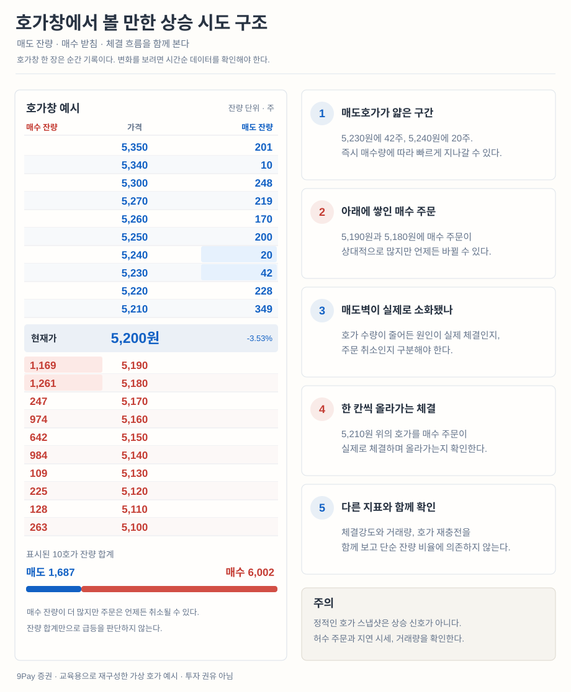

2장 · 주문과 체결
호가창 읽는 법, 지정가와 시장가, 체결 순서, 거래에 붙는 비용
호가창은 중고 거래 게시판이다
호가창은 "이 가격에 사겠다"와 "이 가격에 팔겠다"가 가격별로 줄 서 있는 표다. 중고 거래로 치면 팝니다 글 과 삽니다 글 이 가격순으로 정리된 게시판이다.
팔겠다는 사람들 (매도호가)
12,400원
8,200주
12,350원
3,100주
12,300원
1,500주
현재가 12,250원
← 방금 체결된 가격
12,250원
2,300주
12,200원
11,900주
12,150원
4,600주
사겠다는 사람들 (매수호가)
막대가 길수록 그 가격에 걸린 주문이 많다는 뜻
위(파랑)는 팔겠다는 주문, 아래(빨강)는 사겠다는 주문이다. 사려는 사람이 많아지면 파란 줄을 아래에서부터 사 올리며 가격이 오른다.
지금 바로 사려면 맨 아래 파란 줄(12,300원)을 사야 한다. 현재가 12,250원보다 50원 비싸다.
지금 바로 팔려면 맨 위 빨간 줄(12,250원)에 팔아야 한다.
이 50원 차이를 스프레드 라고 한다. 거래가 한산한 종목일수록 이 간격이 벌어진다.
벽은 사라진다 12,200원에 11,900주가 걸려 있으면 "여기서 받쳐 주겠구나" 싶지만, 주문은 언제든 취소할 수 있다. 가격이 정말 그 자리까지 내려오면 물량이 순식간에 사라지는 일이 흔하다. 호가 물량은 약속이 아니라 지금 마음 이다.
호가창에서 급등 조짐을 볼 때
위쪽 매도호가가 얇고 아래쪽에 매수 잔량이 두텁게 쌓이면 가격이 쉽게 올라갈 것처럼 보인다. 하지만 실제 매수 체결이 매도호가를 먹어 올라가는지 가 더 중요하다.

호가가 얇은 구간과 받치는 잔량을 보는 법. 그림을 누르면 크게 볼 수 있다. 재구성한 교육용 예시이며 실시간 호가·급등 예측·매수 추천이 아니다.
움직임이 중요하다 매도호가가 줄어도 매수 체결이 아니라 주문 취소일 수 있다. 매수 잔량도 언제든 사라진다. 호가창 한 장만 보지 말고 체결·거래량·시간에 따른 잔량 변화 를 함께 살핀다.
지정가와 시장가
주문에는 크게 두 가지가 있다.
지정가 "12,200원에 10주 사겠다"처럼 가격을 정한다. 그 가격까지 오지 않으면 체결이 안 되지만, 생각보다 비싸게 사는 일도 없다.시장가 가격을 정하지 않고 지금 나와 있는 호가로 바로 산다. 빠른 대신 얼마에 체결될지 모른다.
시장가로 10,000주를 사면?
12,300원 × 1,500주
먼저 다 사고
12,350원 × 3,100주
다음 줄로 올라가고
12,400원 × 5,400주
남은 수량을 여기서
평균 단가 약 12,370원
현재가보다 +1.0%
주문 한 번에 122원 손해를 보고 시작하는 셈
거래가 한산한 종목일수록 이 차이가 더 벌어진다
시장가는 "얼마든 좋으니 지금 사겠다"는 뜻이다. 호가가 얇으면 위로 미끄러지며 체결된다.
처음에는 지정가 급할수록 시장가를 쓰게 되는데, 급한 날은 대개 가격이 크게 흔들리는 날이다. 하필 그런 날 시장가를 쓰면 제일 비싼 값에 체결된다. 사고 싶은 가격을 정해 두고 기다리는 게 첫 습관이다.
체결에는 순서가 있다
같은 종목에 여러 사람이 주문을 냈다면 순서는 단 두 가지 규칙으로 정해진다.
가격 우선 더 비싸게 사겠다는 주문, 더 싸게 팔겠다는 주문이 먼저다.시간 우선 가격이 같으면 먼저 낸 주문이 먼저다.
12,200원에 매수 주문이 총 11,900주 걸려 있고 내 주문이 그중 뒤쪽 100주라면, 앞의 11,800주가 다 체결된 뒤에야 내 차례가 온다. "같은 가격인데 나만 체결이 안 된다" 는 대부분 이 때문이다.
거래에는 비용이 붙는다
주식을 사고팔면 증권사 수수료와 세금이 붙는다. 한 번은 작아 보여도 자주 거래하면 쌓인다.
거래 습관 1년 뒤 비용 감각
1년에 2~3번 사고팔기 거의 느껴지지 않음 한 달에 한 번 사고팔기 수익률에서 조금씩 깎임 거의 매일 사고팔기 맞혀도 남는 게 없는 구간
한 번 사고팔 때 비용 0.25% 가정, 1년에 원금의 몇 %가 새나
1년 3번
0.75%
매달 1번
3%
거의 매일
62.5%
매일 사고팔면 1년에 원금의 절반 넘는 돈을 비용으로 낸다.
0.25%는 계산을 위한 가정이다. 실제 수수료와 세금은 증권사·시장·시기마다 다르다.
정확한 수수료율과 세율은 증권사와 제도에 따라 다르고 바뀐다. 거래 전에 내 증권사 화면에서 확인한다. 기억할 건 하나다 - 거래는 공짜가 아니다.
체결되지 않는 흔한 이유
정규장이 아닌 시간에 주문을 냈다
호가단위에 맞지 않는 가격을 넣었다(1장의 계단 그림)
상한가·하한가 밖의 가격을 넣었다
현재가에서 먼 가격이라 아직 차례가 오지 않았다
이 사이트에서 확인하기
종목 검색 에서 종목을 열어 현재가가 어떻게 바뀌는지, 거래가 많은 종목과 적은 종목이 어떻게 다른지 본다.종목 > 종목분석 의 매물대를 보면 어느 가격대에 주문이 쌓이기 쉬운지 감이 온다.
심화 연구실 · 실제 체결비용은 주문가격보다 복잡하다
전문 거래 분석에서는 주문을 넣은 순간의 가격과 최종 체결가격을 구별한다. 주문이 여러 호가 단계에 걸쳐 체결되면 평균체결가격(VWAP) 이 달라진다. 최우선호가만 보고 매수금액을 계산하면 시장 충격과 실행손실(implementation shortfall) 을 놓치기 쉽다.
실전 계산 · 시장가 매수 200주의 미끄러짐
매도호가 대기 수량 실제 매수 체결
10,000원 80주 80주 10,010원 150주 120주 결과 총 230주 대기 200주 체결
평균 체결가 = (80 × 10,000 + 120 × 10,010) ÷ 200 = 10,006원
최우선 매도호가 대비 1주당 6원, 총 1,200원이 더 들었다. 상대 비용은 약 0.06%이며 세금·수수료·추가 가격 충격은 제외했다. 주문량이 늘면 잔량이 변하거나 호가가 취소돼 이 숫자도 변한다.
체결 깊이와 가격 충격
80주 · 10,000원
이 가격대 수량 소진
120주 · 10,010원
다음 호가에서 잔량 체결
200주 평균 10,006원 최우선호가 대비 +0.06%
연구 그림 ② 두 가격대에 나뉜 체결. 실제 호가잔량은 주문 도중에도 바뀐다.
유동성의 세 차원 스프레드 는 당장 사고파는 비용, 깊이 는 현재 호가에서 감당할 수 있는 수량, 회복력 은 큰 주문 이후 호가가 얼마나 빨리 복원되는지를 뜻한다. 거래량이 많아도 순간적으로 얕을 수 있다.
역선택과 정보비대칭 누군가 남보다 빠른 정보를 가지고 거래한다면 반대편 주문자는 불리해진다. 시장조성자는 이런 위험을 스프레드에 반영할 수 있다. 큰 매수벽 = 안전 이라는 해석은 성립하지 않는다.
연구 설계 · 주문 전략 비교하기 시장가·지정가·분할주문을 비교할 때는 단순 체결 수수료뿐 아니라 미체결 확률 , 기다리는 동안 놓친 상승, 시장 충격을 함께 기록한다. 체결된 주문만 남겨 비교하면 미체결이라는 실패 비용이 사라져 성과가 좋아 보인다.
한 줄 정리
호가창은 줄 선 주문이고, 체결은 가격 → 시간 순서로 이뤄지며, 시장가는 편한 대신 미끄러진 값 을 낸다.
문의: goodbyestarwars@gmail.com